Collisions for robots are usually bad…


Dr. Matt Mason, CMU
Compliance: work with geometry. Can be passive mechanical compliance, or active compliance in planning/control.
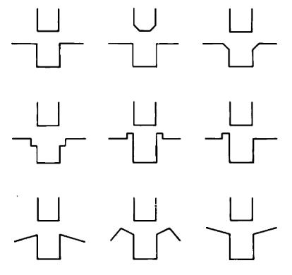
T. Lozano-Perez, M. Mason, R. H. Taylor, “Automatic synthesis of fine-motion strategies for robots.” IJRR, 1984.
Minimalism
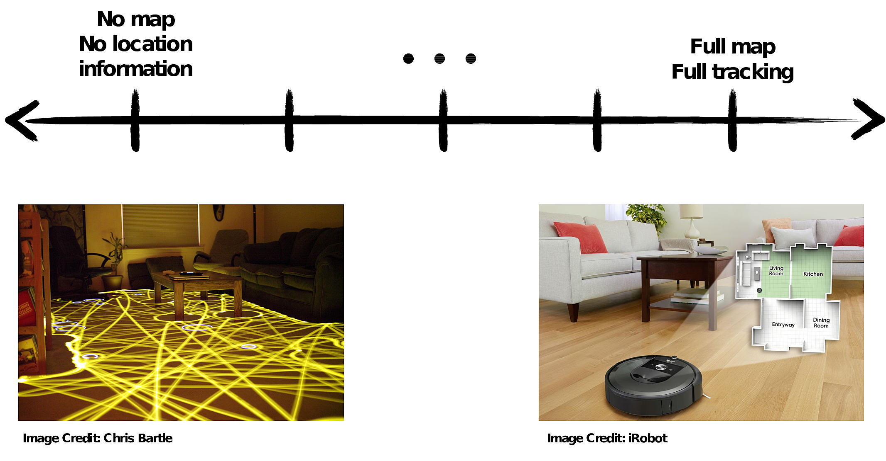
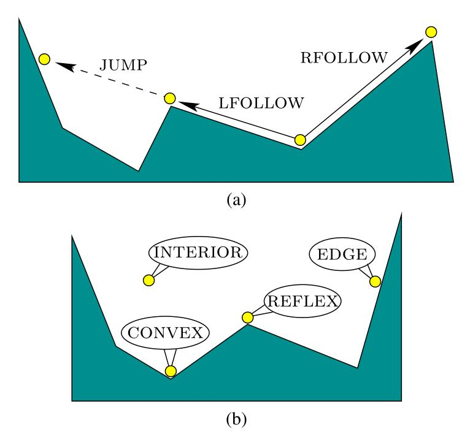
“Mapping and pursuit-evasion strategies for a simple wall-following robot.” M. Katsev, A. Yershova, B. Tovar, R. Ghrist, and S. M. LaValle. IEEE Transactions on Robotics, 2011.
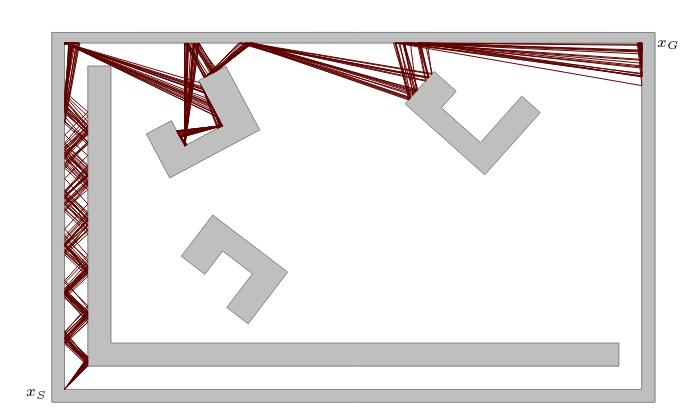
“Planning for provably reliable navigation using an unreliable, nearly sensorless robot.” J. S. Lewis, J. M. O’Kane. International Journal of Robotics Research, 2013.
Iterating the same boundary interaction can cause cycles and trapping regions:

Combinatorial changes from small perturbations:

How to represent boundary interactions (including uncertainty)?
How to plan over boundary interactions efficiently?
Can we leverage geometry of our workspace?
What kinds of tasks can these robots complete, and how to specify?
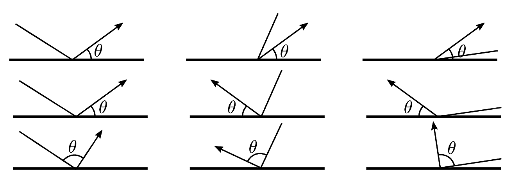
Bounce rule: determines action \(u \in (0, \pi)\) at boundary.
Goal: Planner produces sequence of bounce rules.
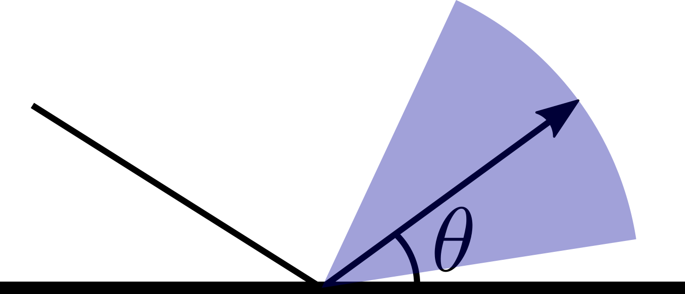
Uncertainty is unavoidable… Plan over nondeterministic bounce rules!
What kinds of error and nondeterminism does this include?
Safe actions: Given two edges in the environment polygon \(e_i\) and \(e_j\), an interval of actions \(\tilde{u}_{i,j} \subseteq (0, \pi)\) is safe iff any action \(u \in \tilde{u}_{i,j}\) executed from any point in \(e_i\) will cause the robot to transition to a point in \(e_j\) in one stage.
Observation: in a single action, the robot can only transition to visible segments of the boundary.
Given geometry, parameterize points on outer boundary and obstacles.
We can explicitly compute a functional form for state transitions between points on the boundary \(\partial P\):
\[f: \partial P \times U \to \partial P\]
Observation: \(f\) is easier to analyze when looking at pairs of mutually visible edges.
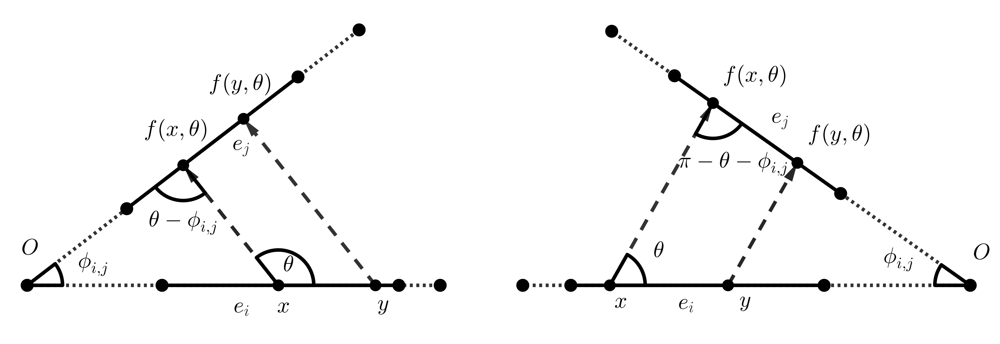
\(f\) is a contraction mapping iff \(|\frac{f(x, \theta) - f(y,\theta)}{x-y} | < 1\)
Can be used to reduce uncertainty!
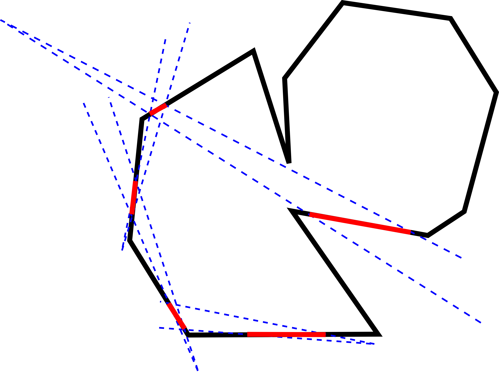
Planning Problem: Given start and goal points on the boundary of the polygonal environment, create a sequence of safe nondeterministic actions that takes the robot from the start point to an interval containing the goal.

Equivalence relation on points along boundary with respect to what edges of original polygon they can “see”. Static obstacles use same partitioning operation!
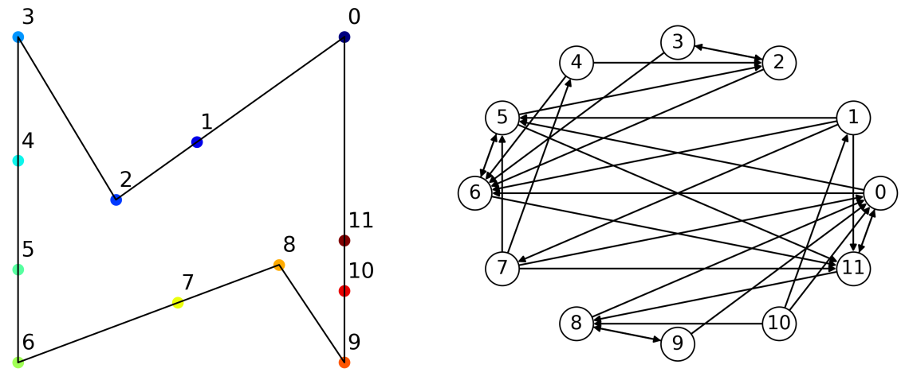
Nodes: Edges of partitioned polygon.
Edges: Directed. Present if safe action exists between edge \(e_i\) and edge \(e_j\). Edge holds data on safe angle interval.
Algorithm 1 of WAFR paper: polygon with \(n\) vertices will produce bounce visibility graph with \(O(n^2)\) nodes and \(O(n^4)\) edges.
Can use different search algorithms for different specification types.
If we want to give our robot a constant control input, can use breadth-first search with constraint intersection.
If we want to bound the maximum distance travelled by the robot, can use Dijkstra’s algorithm.
In all cases, along with a plan, we also get a characterization of how much uncertainty the plan can tolerate (design constraints!)
Of all paths from A to B (up to bounded length), which allows the most unreliable robot?
From a given start set, what parts of the polygon boundary are reachable?
Given a finite set of actions, what parts of the boundary are reachable?
What parts of the polygon are reachable with a constant controller?
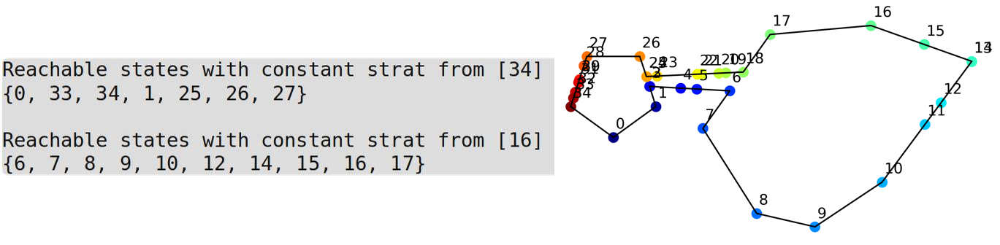


To write down a transition function for an entire cycle, compose individual transition functions until the composition is a return map.
A cycle is stable when this return map is a contraction mapping: two points under the mapping become closer together.
Proposition: For all start points on the boundary of all polygons, a constant fixed-angle controller exists which will cause the robot’s trajectory to enter a stable limit cycle.
Safe cycle: a cycle in the safe bounce visibility graph. May or may not have stabilizing property.
Safe stable cycles: Given a constant action interval at each stage, we can bound the worst-case uncertainty in robot position if each transition is a contraction mapping in all cases.
We have developed a geometric planner that includes dynamical information and allows for optimization with respect to uncertainty in position and actuation.
So far, all planning is done under nondeterminstic, “worst case” assumptions.
Not complete: “splitting” state into two different segments is not allowed. This means not all nondeterministic actions are explored.
We’ve been assuming the robot has a counter and knows the current stage. What if we instead assume that the robot has a set of constant controllers and can only switch as a function of sensor feedback?
Imagine adding “laser beams” to the system: lines that emit a signal when they are crossed by a robot.
with Dr. Amy LaViers. Choreographers and movement observers have lots of technologies for specifying movement!
Traditional planning techniques don’t scale well to multi-robot systems.
Can giving up precise control of individual robots actually help us?
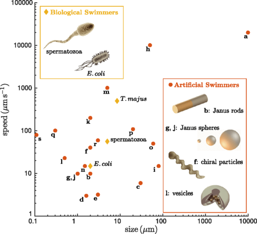
C. Bechinger, R. Leonardo, H. Löwen, C. Reichhardt, G. Volpe, and G. Volpe. Active particles in complex and crowded environments. Reviews of Modern Physics, (2016).
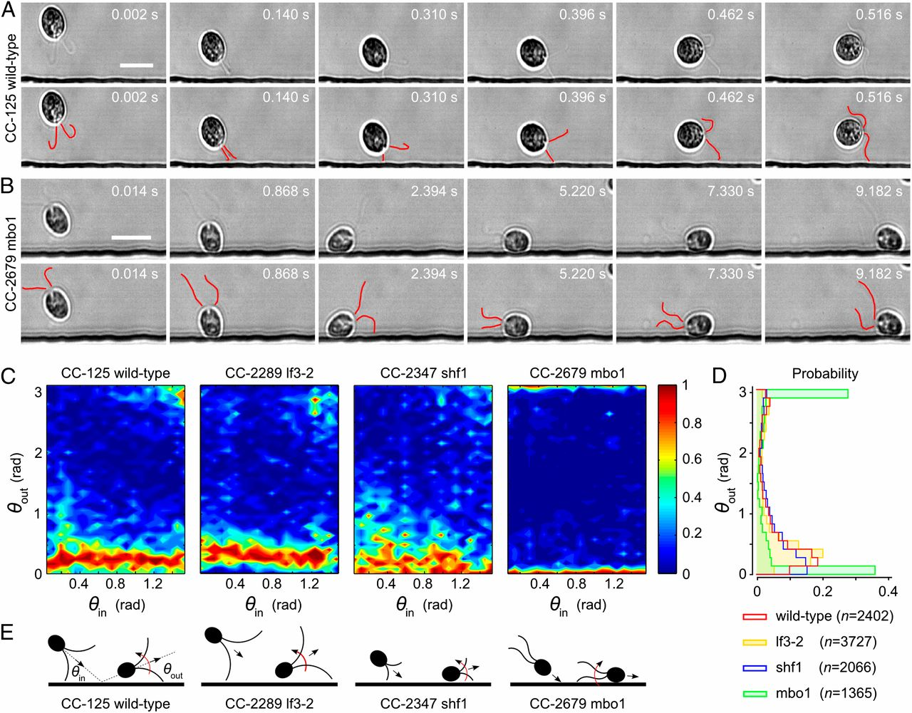
V. Kantsler, J. Dunkel, M. Polin, and R. Goldstein. Ciliary contact interactions dominate surface scattering of swimming eukaryotes. PNAS (2013).
Understanding spatial density and boundary interactions is key step toward manipulation!
Research questions: